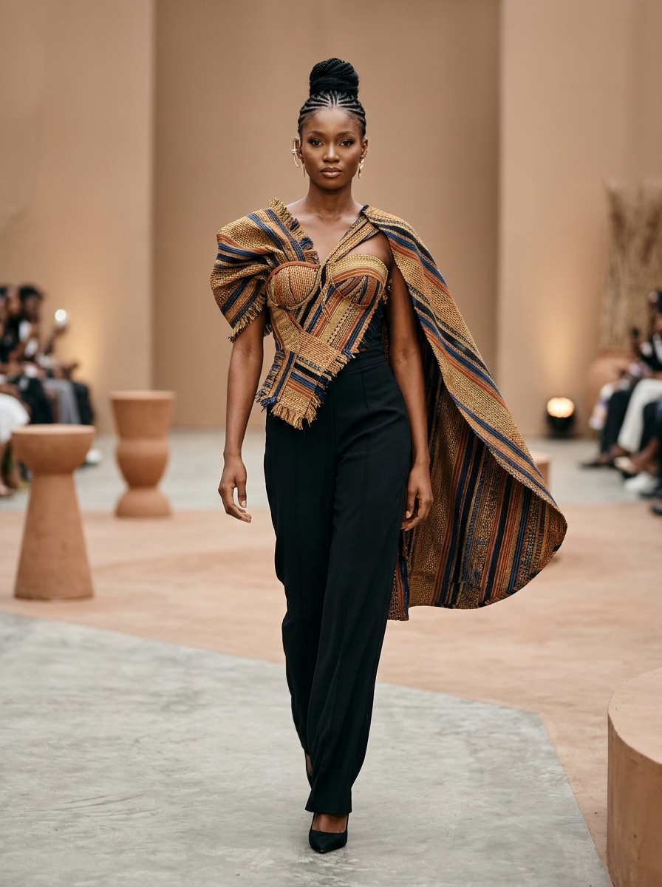
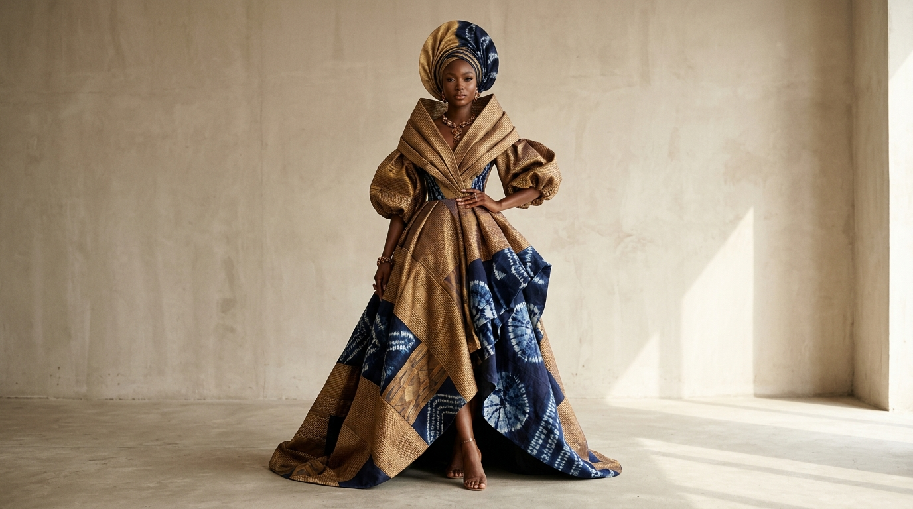
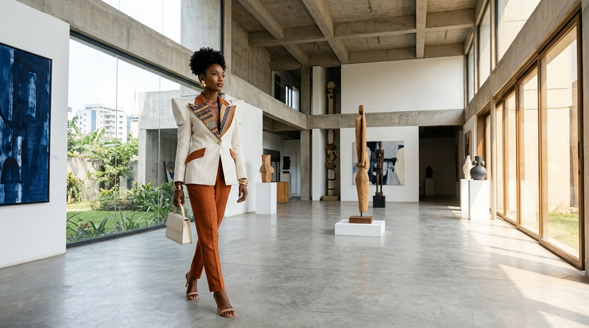
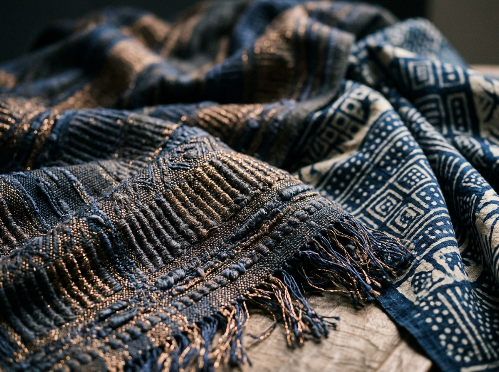
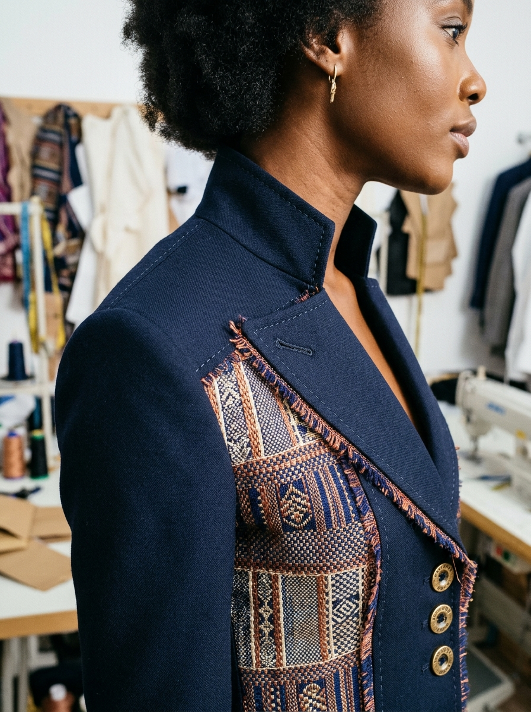
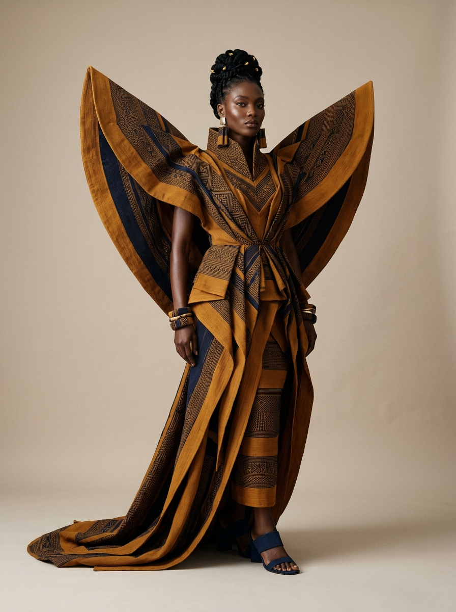
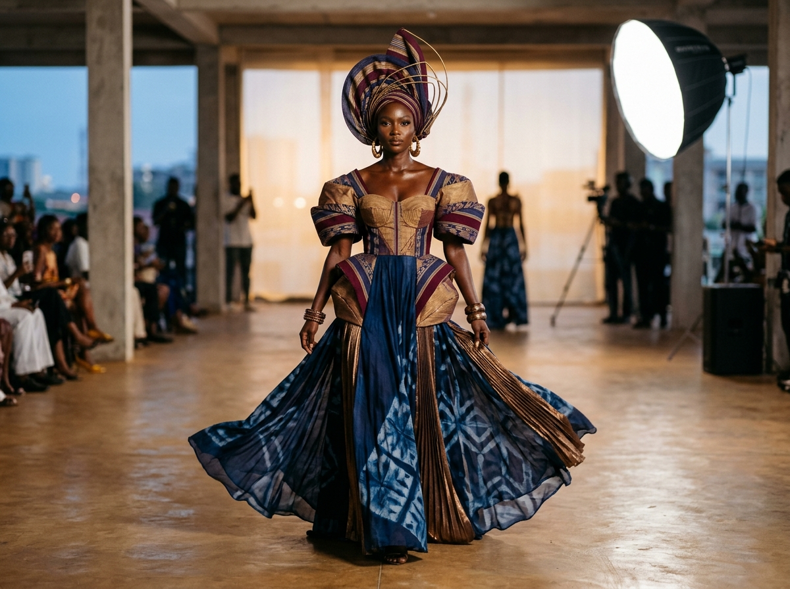
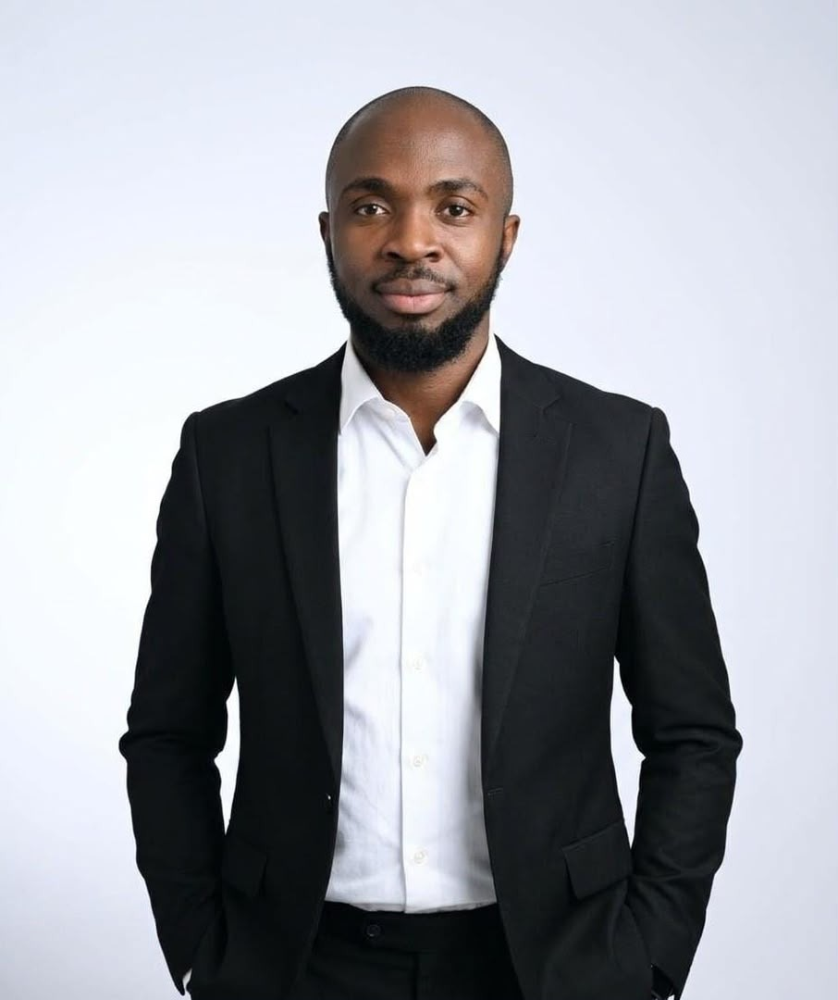

01Original concepts shaped by identity, form and a sense of place.

A NEW EXPRESSION OF HERITAGE
ODA Atelier is a contemporary fashion house shaped by Nigerian identity, indigenous craftsmanship and the quiet power of thoughtful design.
We look to the textures, techniques and stories carried through generations—and translate them into a modern visual language. Every idea begins with respect for where we come from and curiosity about where fashion can go.
EXPLORE OUR MATERIAL LANGUAGE north_east
FORM / TEXTURE / IDENTITY
A STUDY IN TEXTURETRADITION, RECONSIDERED
Our material vocabulary draws from the depth and diversity of Nigerian textile culture.
From the expressive patterning of Adìrẹ and Ankara to the woven character of Aṣọ Òkè, Akwete, Etu, Batik and A’nger, we explore how heritage fabrics can speak in new silhouettes, new contexts and new ways.
DESIGN / DEVELOPMENT / DETAIL
From the first sketch to the final finish, we bring together cultural storytelling, considered construction and a modern approach to the way we dress.

01Original concepts shaped by identity, form and a sense of place.

02Fabric, silhouette and finishing brought into considered balance.

03Contemporary expressions of heritage for a world without borders.

04 — OUR MANIFESTO
We believe the future of fashion is richer when it remembers. Our work honours the makers, materials and cultural knowledge that shape us—while remaining open to new ideas, new places and new possibilities.
Responsible design begins with intention: to make choices with care, to value craft, and to keep asking how fashion can move forward without leaving its stories behind.

01 / CREATIVE DIRECTIONFOUNDER & CREATIVE DIRECTOR
A designer connecting Nigerian cultural identity with contemporary international fashion.
With professional experience across Nigeria and the United Kingdom, Oludayo leads ODA Atelier’s creative direction and design development. His practice explores indigenous textiles, luxury tailoring and textile innovation through a multidisciplinary lens shaped by fashion, project management, forensic science and geology.
06 — RECOGNITION
LET’S MAKE SOMETHING MEANINGFUL
COLLABORATIONS / PRESS / BESPOKE COMMISSIONSWe welcome bespoke tailoring commissions, private atelier appointments, press loans, and international cultural collaborations.